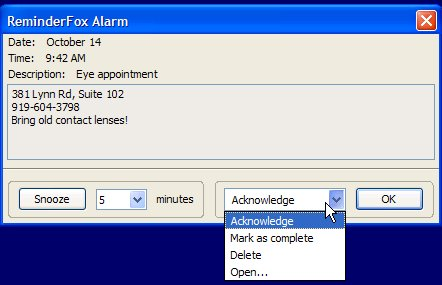

Foxy Icon
To access easily the Reminderfox functions a Foxy Icon can be placed on the various menu bars of the host application (Firefox or Thunderbird).
That Foxy icon brings multiple modes:
| To place the Foxy on various menu bars use the normal [Customize] of Firefox or Thunderbird.Also on Reminderfox Options the appearance can be configured. |
{kind=link}
- Overlapped on the Foxy icon a badge with numbers can be displayed. The number show the number of today's and upcoming reminders. The background will change to red with important today's reminder. See also Options --> Firefox/Thunderbird for configuration
- click the icon to open the Main Window to show the list of reminders or todo's and a calendar
- move the cursor over the icon and wait for a moment to display a 'tooltip' that shows today's reminders, any upcoming reminders, and any ToDo's / custom list items that you have indicated should be shown
- use the context menu (right mouse click) to open
| The badge on the Foxy Icon shows the number of today's and upcoming reminders. |
{kind=link}
See Reminderfox Options to configure Foxy Icon
Foxy Bow
Reminders
Reminderfox offers a special element with a 'Bow' (ribbon) and an associated text -- the Foxy Bow. That bow will indicate reminders status. If there is a reminder for the current day, it will appear on the menu bar. The color of the bow icon on the bar changes, according to the status of reminders. If there is a reminder for the current day, the bow is red.
If there is a reminder for the current day, the bow is red. If there are upcoming reminders, the bow is blue.
If there are upcoming reminders, the bow is blue. If there are no current or upcoming reminders, the bow will be greyed out.
If there are no current or upcoming reminders, the bow will be greyed out.- The text shows the Today's reminders, it's length can be configured on the Option pages.
Context Menu
Right-mouse-click on Foxy Bow/Text will open an menu to allow easy access to various functions of Reminderfox
Tooltip
Hovering over the Foxy Bow on the menu bar will display a 'tooltip' that shows today's reminders, any upcoming reminders, and any ToDo's / custom list items that you have indicated should be shown. See Reminderfox Options to configure Foxy BowAlert Slider
Additionally, you can have an alert slider periodically appear (on Windows/Linux) with the current and upcoming reminders.
Alarms
You can set alarms to show up on or before an event occurs. At the specified time an alarm dialog will pop up:

You can simply acknowledge the alarm or select a number of other options from the pull-down menu.- Snooze -You can choose to Snooze the alarm to be reminded at a later time. Select the time you want to snooze for or directly enter it into the textbox, and then click the snooze button. You will be reminded again after that number of minuteshas passed.
- Acknowledge - this simply acknowledges the reminder and closes the alarm window.
- Mark as Complete - this marks this reminder as complete, and closes the alarm window.
- Delete - this deletes the reminder and closes the alarm window
- Open... - this opens up the reminder in the reminder list dialog.
Quick Alarms
You can create a Quick Alarm via the menu bar icon's context menu. This allows you to quickly set an alarm to be reminded of something that will happen shortly. Example: "check pot roast" in 20 minutes. Also for the weak-willed, like me, they can also be used to remind yourself to get off the internet after a specified period of time. Note that these are just quick temporary alarms, and are not added to your reminders. Enter in when you want to be notified: